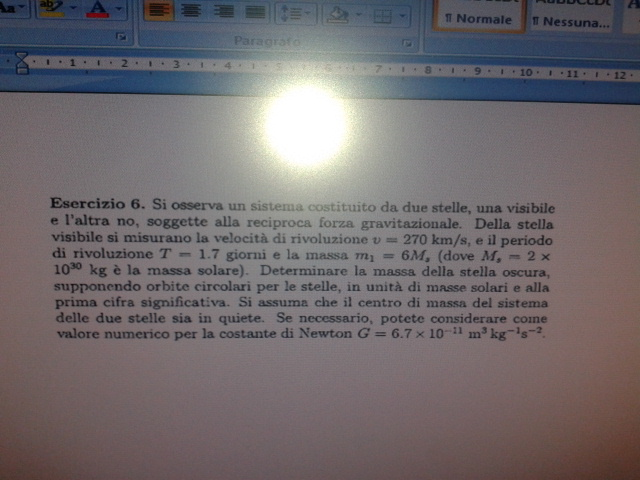

gluonstrongforce8 mag 2015, 15:44
Salve a tutti. Propongo questo problemino per confrontare le soluzioni
-
Allegati
-

- 20150508_154103[1].jpg (113.28 KiB) Visto 3878 volte
andrea968 mag 2015, 18:43
a me viene che \(m_2 \approx 1,86 \cdot 10^{31} kg\)
gluonstrongforce8 mag 2015, 20:16
Potresti mettere un sommario del tuo procedimento? Secondo te c' è un modo per non utilizzare affatto la costante G
andrea968 mag 2015, 21:47
\(m_1\) dista \(r_1\) dal centro di massa e \(m_2\) dista \(r_2\) dallo stesso.
Ora imponendo l'equilibrio centrifugo di entrambe le masse viene fuori che il sistema ruota con velocità angolare \(\omega=\frac{2\pi}{T}=\sqrt{G\frac{m_1+m_2}{(r_1+r_2)^3}}\). In quest'equazione ci sono le tre incognite \(m_2\) \(r_2\) e \(r_1\) quindi servono altre due equazioni,una è palesemente \(v=\frac{2\pi r_1}{T}\), l'altra è \(m_1r_1=m_2r_2\) ( visto che quelle distanze sono misurate dal centro di massa.
Ora mettendo a sistema le tre equazioni e definendo \(x=\frac{m_2}{M_s}\) si ottiene (se non ho sbagliato i conti) \(\frac{(6+x)^2}{x^3}=frac{2\pi G M_s}{Tv^3}\); questa l'ho risolta numericamente.